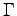

Next: 7.3 File space requirements
Up: 7 Performance issues (PWscf)
Previous: 7.1 CPU time requirements
Contents
A typical self-consistency or molecular-dynamics run requires
a maximum memory in the order
of O
double precision complex numbers, where
O = m . M . N + P . N + p . N1 . N2 . N3 + q . Nr1 . Nr2 . Nr3
with m
, p
, q =
small factors; all other variables have the same
meaning as above.
Note that if the 
-point only (
q = 0
) is used to
sample the Brillouin Zone, the value of N
will be cut into half.
The memory required by the phonon code follows the same patterns,
with somewhat larger factors m
, p
, q
.
Paolo Giannozzi
2008-05-14